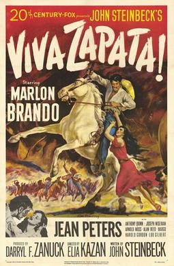

Viva Zapata
Starring: Marlon Brando, Jean Peters, Anthony Quinn
Director: Elia Kazan
Writer: John Steinbeck
Producer: Darryl F. Zanuck
Viva Zapata! is a 1952 American biographical Western film directed by Elia Kazan, dramatizing the life of Mexican revolutionary Emiliano Zapata from his peasant upbringing through his rise to power in the early 1900s and his death in 1919. It stars Marlon Brando as the title character, and features Jean Peters as his wife Josefa and Anthony Quinn as his brother Eufemio.
Trivia
- Won the Academy Award for Best Supporting Actor.
- Also nominated for: Academy Award for Best Actor; Academy Award for Best Writing, Original Screenplay; Academy Award for Best Art Direction, Black and White; Academy Award for Best Original Dramatic or Comedy Score.
- The screenplay was written by John Steinbeck based on Edgcomb Pinchon's 1941 book Zapata the Unconquerable.
- Steinbeck's screenplay has been published as a book along with a narrative of Zapata's life that Steinbeck also wrote.
- Barbara Leaming writes in her biography of Marilyn Monroe that Monroe tried to obtain a part in the film, but failed, presumably because of Darryl F. Zanuck's lack of faith in her ability, both as an actress and as a box-office draw.
Filming Locations
- New Mexico
- Mexico
- Colorado
- Roma
- Filming took place in locations around the American Southwest, including Durango, Colorado, Roma, Texas, San Ygnacio, Texas in Zapata County, and New Mexico.
Previous Showings
3 Runs • 1 Festival
Original Billings: 2 runs (April 6, 1952 - April 2, 1953)
Original Run: April 6, 1952 (Sunday - Friday)
All runs on record (3):
- April 6, 1952 (Sunday - Friday)Marlon Brando, Jean Peters
- April 2, 1953 (Thursday - Friday)Marlon Brando, Anthony Quinn
- November 5 - 7, 2004Marlon Brando: His First Decade in Films, plus Nine Musicals with Fred Astaire aw/ The Magnificent Seven